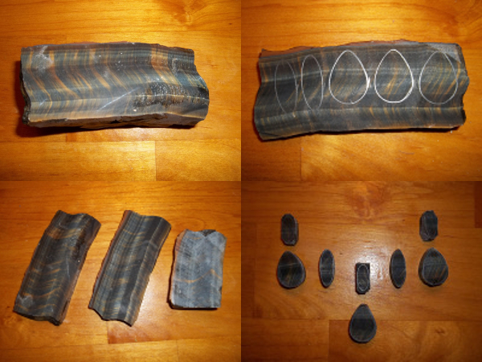

I really enjoy cutting open a rock and deciding how it should be sliced to
bring out the most interesting features. This tiger's-eye had been compressed
and warped, so I cut it at a 90 degree angle from what I usually would and
gave it a high dome, which brought out the lightning-bolt effect instead of a
cat's-eye. These are being paired with moonstone for a necklace.



These stones are all prettier than they appear in the pictures. It might be a good
summer project for me to learn more about photographing small shiny things and get
the right kind of lighting so I can do a better job with it. I went through about
two hundred really bad pictures, just to have a few for this page's content.
The agatized jasper here looks like painted porcelain with an almost liquid gloss
in real life, but I don't think I captured any of that in this picture.
My favorites here are the four matched jasper stones at the top. They've got a nice
flow visually and some funky colors, and they're cut slightly assymetrical to go with
the organic look of the settings they're going into.


Opals are one of the stones I most enjoy working with. The pink stones are rhodochrosite
and there's a better shot of the agatized jasper and a not-so-good shot of a rainbow
obsidian at the bottom right, but the rest are all different kinds of opal. Even the
intarsia butterfly wings have a paper-thin layer of opal sandwiched between the quartz
glass cap and the colored stone underneath, and depending on the light and angle, it
ranges from invisible to adding bright flashes of color. The wings are where I tried to
put the image map link, but it shifted a bit to the right for some reason.
I've only done a few faceted stones because I don't have all the equipment to do them
properly.
I do have enough to do intarsia though, and I enjoy the challenges of matching
pieces of stone and planning all of the cuts needed for a particular effect.